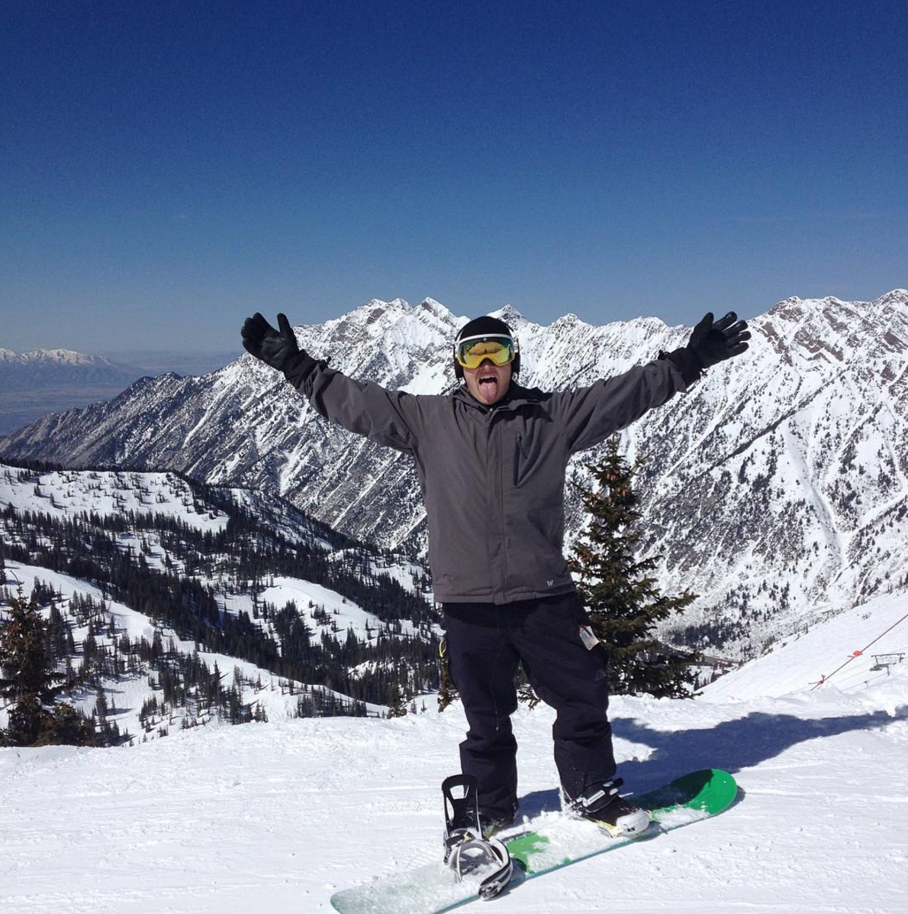

Welcome! As a Jr. Web Developer, I began my coding journey in 2016 when I enrolled at Wyncode Academy. My time as a coder has been challenging, fruststrating, and most of all, rewarding. My skillset is growing every day, and I look forward to the challenges that lay ahead. My core technologies include Ruby, Ruby on Rails, HTML, CSS, Javascript, Bootstrap, and SQL.
Wyncode Projects
Lisztomania
Lisztomania is a Wyncode Academy project that was built by Andrew Lever and Anastasia Bykova. Lisztomania allows users to our search engine to find their favorite artists, songs, and albums. Lisztomania also allows users to see the top trending songs, artists, and genres. This app was built in one weekend for Friends & Family project at Wyncode.
BrandME
BrandME is an online job board that helps connect Brands with Brand Ambassadors. BrandME was built with two goals in mind: allow users an easy way to monetize their social media accounts, and allow companies to easily search for ambassadors based on their social media followers.
In the works:
NBA Kings
NBA Kings is an online platform built for the Daily Fantasy player. NBA Kings will allow users to create and optimize lineups, view player rankings, export linueps, and more. Estimated completion: June 2017
Check out more on my Github